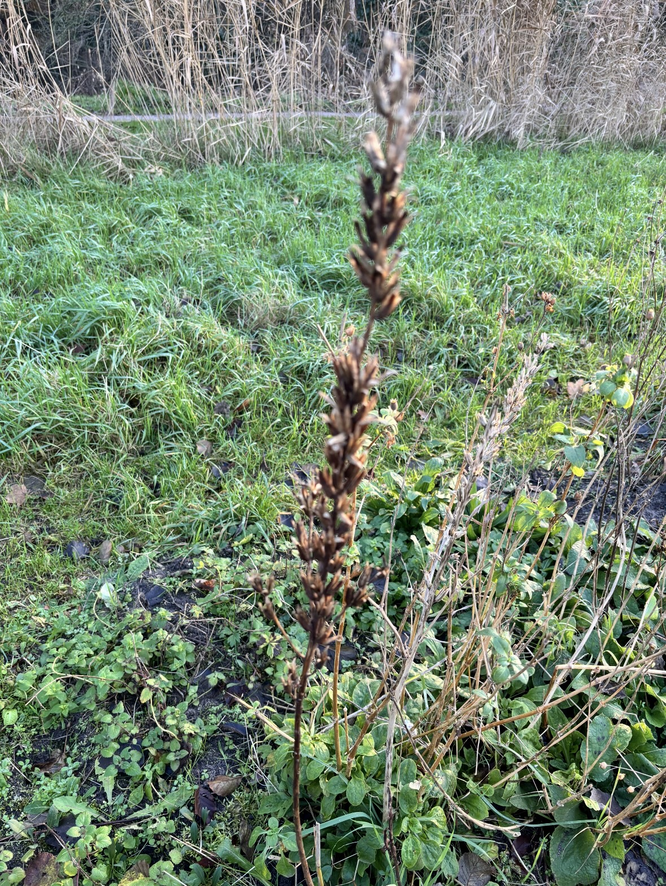
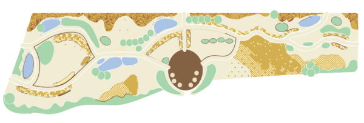
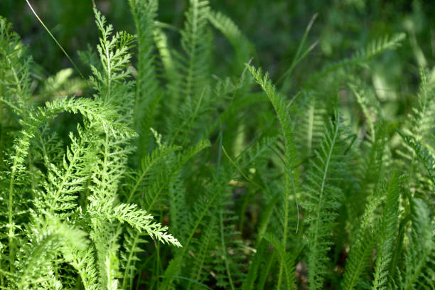

Ontdek het bloemenveld
Ontdek de planten, bloemen en insecten van het Bloemenveld in Park Frankendael.

Ontdek het veldLaatste nieuws



28 mei 2025
Witte dovenetel
Lijkt op brandnetel maar prikt niet. Bloeit lang door zacht weer.
Lees meer →